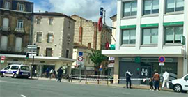

Lot-et-Garonne
Des plaies perforantes à l'origine de la mort
Depuis mardi, les enquêteurs remontent le fil de l’emploi du temps de la victime. PHOTO C. CASTAN
Agen - L'autopsie de Cherif Benfalami a mis en évidence des lésions compatibles avec des coups et l'utilisation d'une arme blanche
Le couple de trentenaires, principaux suspects dans la mort de Cherif Benfalami, retrouvé mardi 28 avril en milieu de matinée dans un squat, boulevard Sylvain-Dumon à Agen, est toujours entendu ce jeudi matin par les enquêteurs de la police judiciaire. Interpellés dans la foulée de la découverte du corps, cet homme et cette femme, au casier judiciaire chargé, gravitant dans un milieu précaire où la consommation de toxiques va de pair avec les fréquentations hasardeuses, livrent des versions évolutives au fil de leurs auditions.
L'autopsie du corps de la victime, réalisé ce mercredi à l'institut médico-légal de Bordeaux, a dénombré des lésions résultant de "coups et plusieurs plaies perforantes à l'origine du décès, compatibles avec l'utilisation d'une arme blanche."